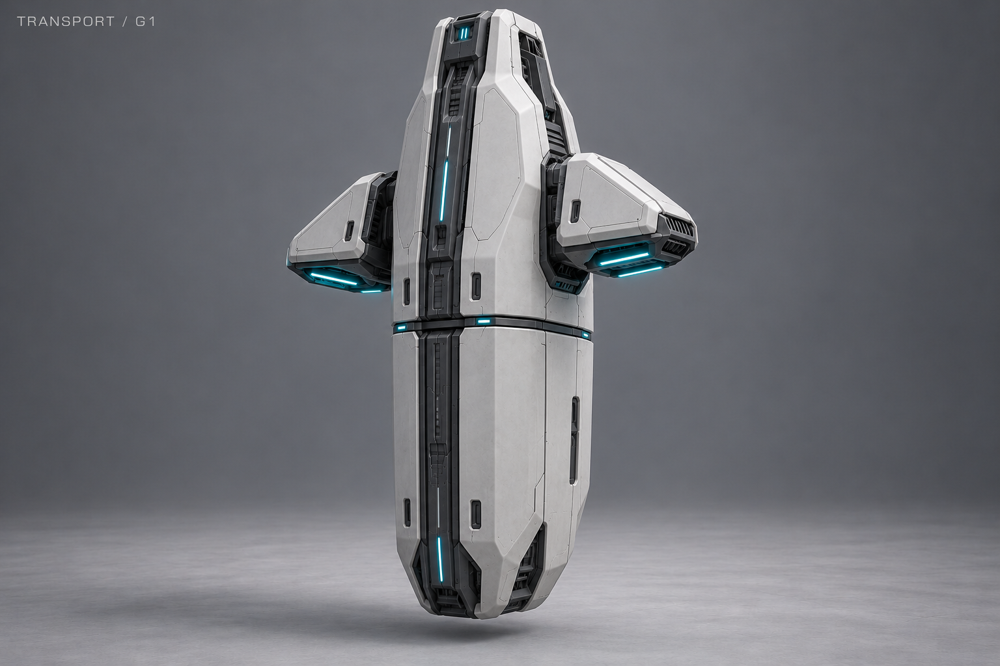
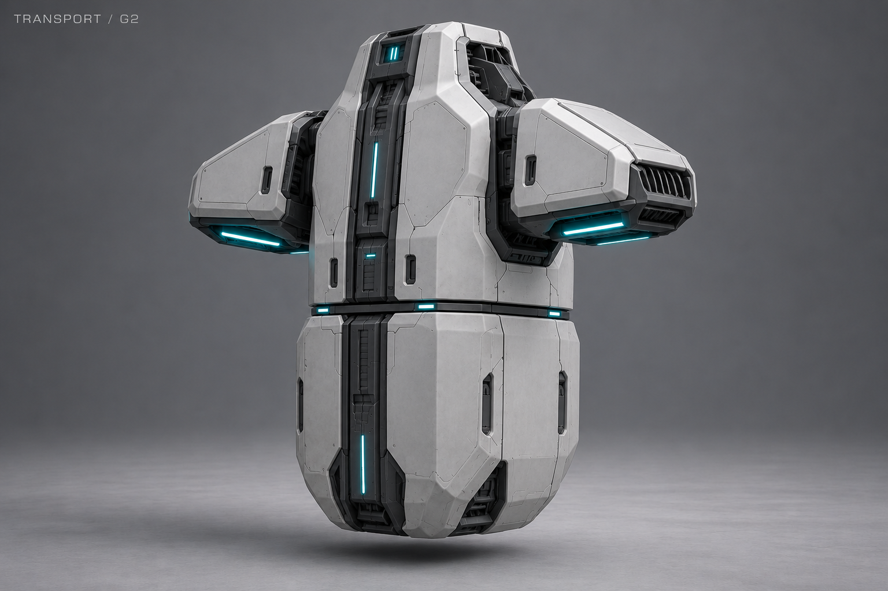
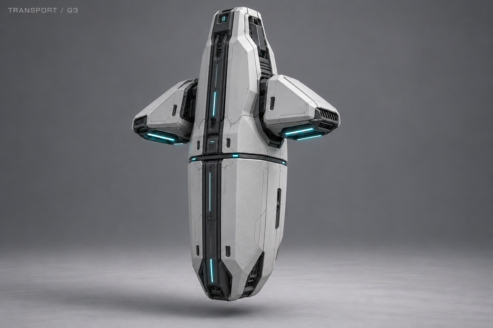
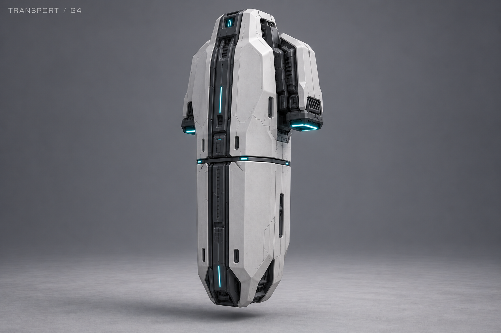
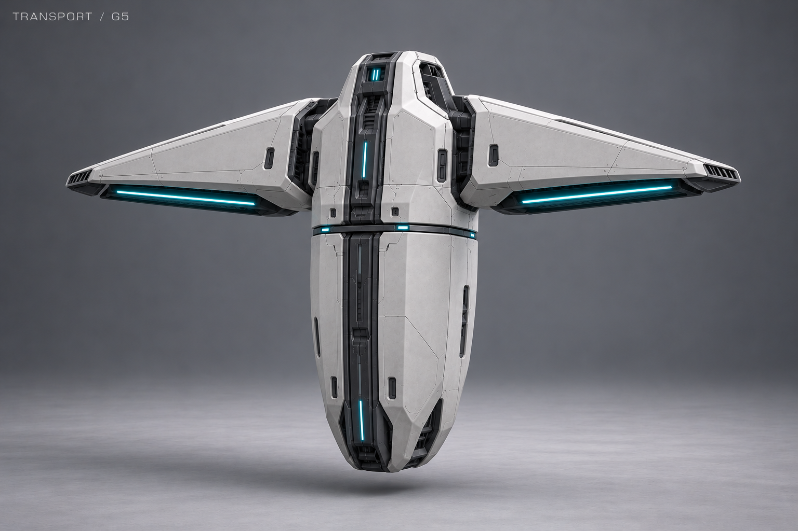
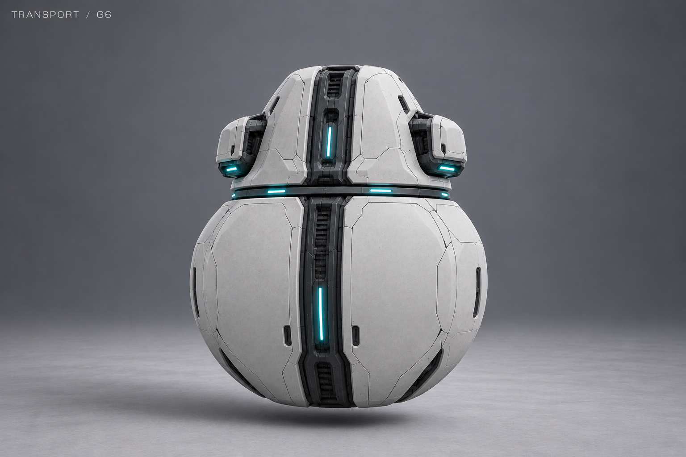

G1 · Монолит


Близко к исходному G: стройный монолит и две короткие двигательные плечевые секции.
28 октября 2026 · G1–G6 · история поиска; автор выбрал исходный G.
Общий ориентир — вертикальный носитель G. Нижний отделяемый модуль полностью непрозрачен: без окон, стеклянных камер и видимой нанитной массы. Различаются пропорции, оболочка и расположение двигателей. Автор оставил исходный G; G1–G6 не приняты.
Жидкая форма перевозимых нанитов объясняет внутренний объём, но не требует показывать его снаружи. Вместимость, масштаб, работа сброса, сборка юнитов и превращение капсулы в рампу этими изображениями не определены.

Близко к исходному G: стройный монолит и две короткие двигательные плечевые секции.

Более короткий широкий корпус, массивные двигательные плечи и глубокая компактная капсула.

Три радиальных двигателя вокруг вертикального корпуса и округло-треугольная нижняя капсула.

Боковые щёки и двигательный блок за верхней частью корпуса; меньше выступов по сторонам.

Широкие треугольные плечи и длинная закрытая капсула под узким килем.

Более округлый кокон и компактный верхний носитель с близко посаженными боковыми двигателями.